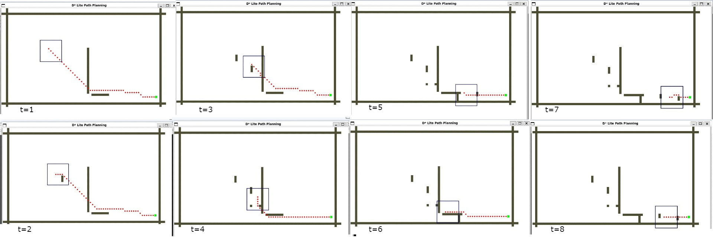
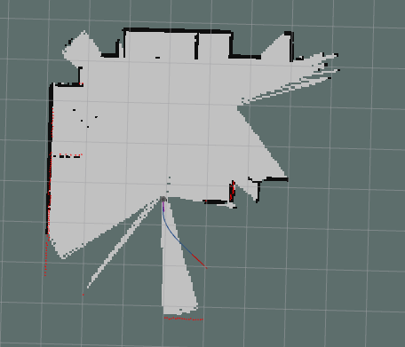
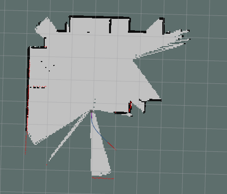

Project Abstract
Path planning for mobile robots has received a lot of attention because it is the foundation of robotic autonomous navigation and other task executions in Artificial Intelligence (AI) and Robotics. Mobile robots have a wide range of applications, such as assisting the visually impaired and the elderly with indoor navigation, industrial and military applications, as well as planetary exploration robots like rovers. Hence, a well-designed and efficient path-planning algorithm is critical to saving time, reducing energy consumption, and lowering the operational costs of the mobile robot. However, path planning algorithms face a significant challenge when planning a path in an unknown environment with dynamic obstacles. The goal of this project was to use the D* lite algorithm to address path planning for mobile robotics in an unknown environment. The experiment results in a static in the simulated world and test implemented in a 2D grid space show that the algorithm performs well in a dynamic world as well.
Problem Description
Avoiding obstacles as the robot moves from its starting point to its destination is one of the most difficult path-planning challenges. When comparing known and static environments, unknown environments with dynamic obstacles present more challenges. A suitable path-planning algorithm ensures safe and effective point-to-point navigation, critical for saving time and reducing wear and capital investment.
The D* lite algorithm can address the challenges of path planning for mobile robots in an unknown environment with dynamic obstacles. It allows the robot to maintain non-optimal paths and recalculate them in real-time, making it efficient.
Therefore, the application of the D* lite algorithm as a path planning algorithm in an unknown environment is the focus of this project, followed by its execution with a mobile robot named Turtle-bot3 Burger model. A simulation test using Gazebo (a ROS-based simulation environment) and the performance of the algorithm will be assessed.
Experiments and Discussions
Figure 1 depicts a 2D simulation environment that was built based on an implication for an existing D* lite algorithm implantation in a dynamic environment. First, the robot constructs a heuristic path using an approximated euclidean distance to reach the goal position from its initial state. As the robot moves in the discrete space, a new obstacle is introduced, and the robot re-calculates its path again in order to avoid the obstacle and reach the goal.
The ROS package that has a large application in mobile robots 'move base' package which implements a sequence of commands for the actuator to reach a goal position. The move base node links together a global and local planner to accomplish its global navigation task.

The next approach was to create a 2D occupancy grid map of the environment, allowing the robot to plan its path in 2D and then map its waypoints to the robot actuator to execute. This approach works well in a static environment and simplifies the path planning problem.
 
